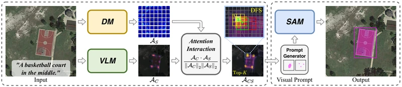
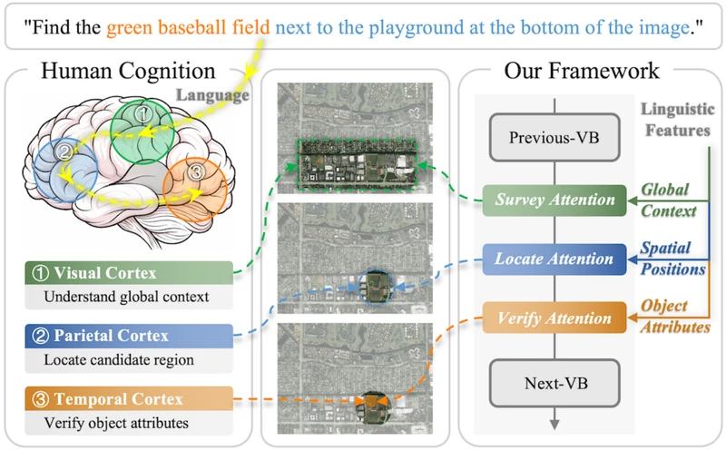
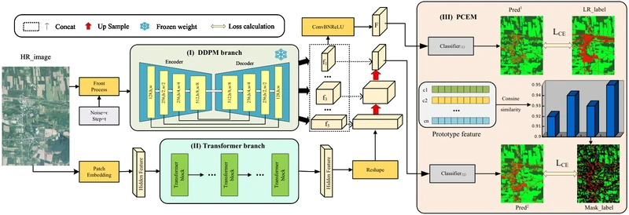

Training-Free Open-Vocabulary Visual Grounding for Remote Sensing Images and Videos
Grounding natural-language queries in images and videos using frozen foundation models, without task-specific training.
Research, ideas & the next horizon
朱永山
Exploring the connections
between vision and language.
I am an undergraduate at Xidian University, where I conduct research under the supervision of Prof. Di Wang.
I will join Westlake University as a Ph.D. student in Fall 2027, advised by Prof. Anpei Chen.
My work explores computer vision and multimodal learning, including language-guided understanding of remote sensing images and videos.
02 / RESEARCH
Vision meets language.
From images to understanding.

Grounding natural-language queries in images and videos using frozen foundation models, without task-specific training.

Progressive visual grounding through global context, spatial relations, and object attributes.

Combining local semantic refinement and global contextual reasoning for land cover mapping from coarse supervision.
03 / EXPLORATIONS
MULTIMODAL REASONING
Exploring memory-efficient, long-context multimodal reasoning with decoupled latent attention.
RESEARCH WORKFLOW
An open repository of paper-reading skills for Obsidian.
04 / NOTEBOOK
Research notes, ideas in progress, and the occasional reflection.
A place for research notes, ideas in progress, and the next chapter — from Xidian to Westlake.
FALL 2027 — INCOMING
Ph.D. studies
Advisor: Prof. Anpei Chen ↗
2023 — 2027
Undergraduate studies
Research advisor: Prof. Di Wang ↗
06 / CONNECTIONS
Explore my work, follow along, or connect with me on GitHub.